Home / Past papers / MLT End Term / this paper
IIT M DIPLOMA ET1 EXAM QPD1 S2 30 Apr 2023 - 30 Apr 2023
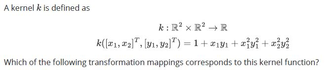
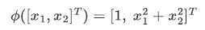
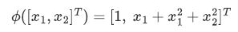
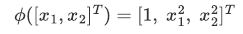
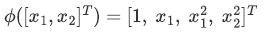
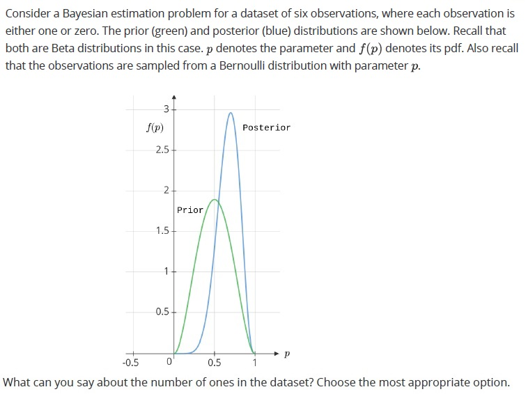
- 1
- 3
- 5
- TRUE
- FALSE
- The entropy of the right-child is equal to half the entropy of the left-child.
- The entropy of the right-child is equal to twice the entropy of the left-child.
- The entropy of the right-child is equal to the entropy of the parent.
- The entropy of the right-child is the sum of the entropies of the parent and theleft-child.
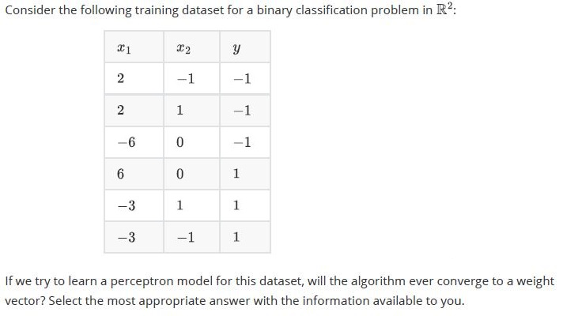
- Yes, it will certainly converge to a weight vector.
- No, it will never converge.

- w shown in this diagram is the optimal weight vector for a hard-margin, linear-SVM
- w shown in this diagram is not the optimal weight vector for a hard-margin,linear-SVM
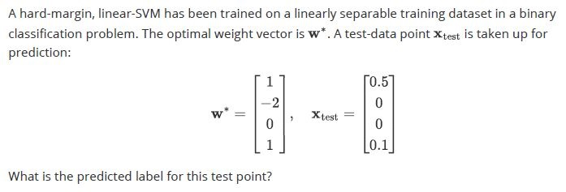
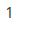
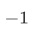
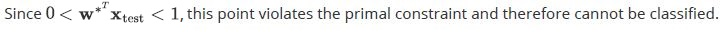
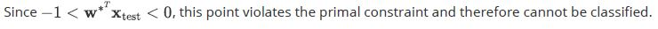
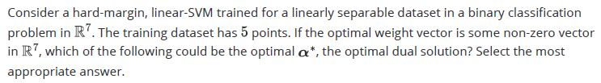
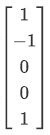
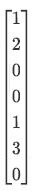
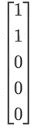
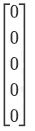
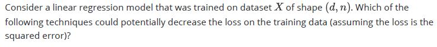
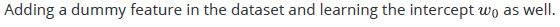
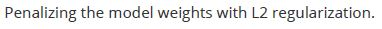
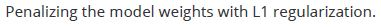
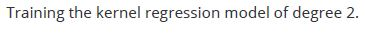
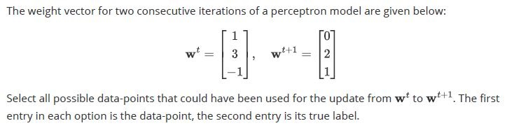
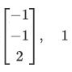
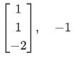
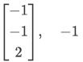
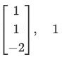
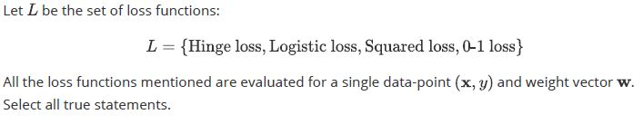
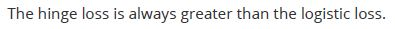
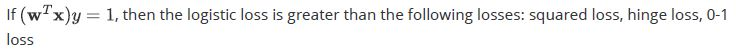
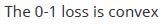
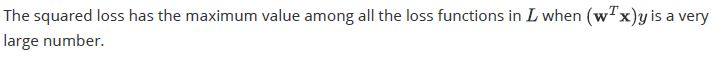
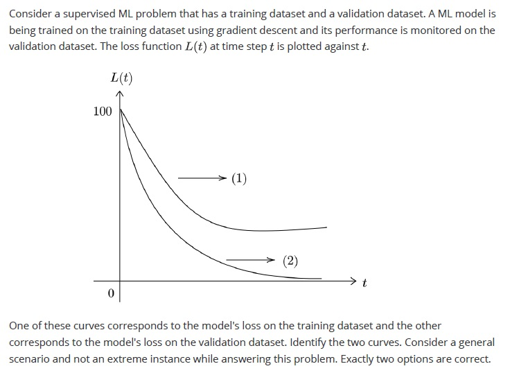
- (1) is the loss on the validation dataset
- (2) is the loss on the training dataset
- (1) is the loss on the training dataset
- (2) is the loss on the validation dataset
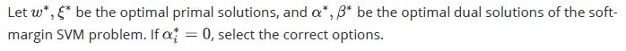
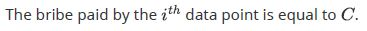
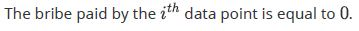
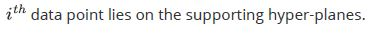
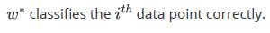
- If the performance of each estimator in the bagging algorithm is almostidentical, the benefit of using bagging to combine them may be minimal or insignificant.
- Weak learners have low bias and high variance.
- In random forests, multiple decision trees (estimators) are trainedsimultaneously, allowing for parallel processing and faster model training.
- In the random forest algorithm, multiple decision trees are trained on thesame dataset to create an ensemble model.
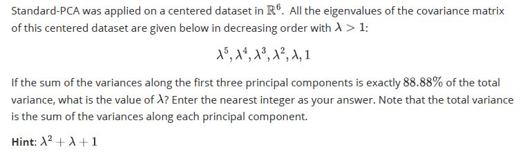
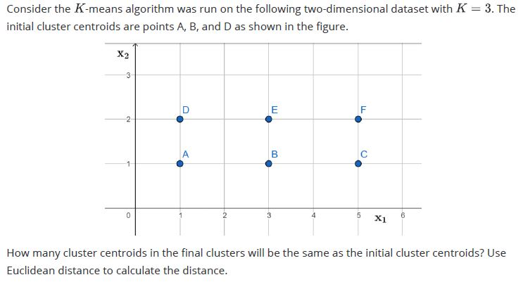
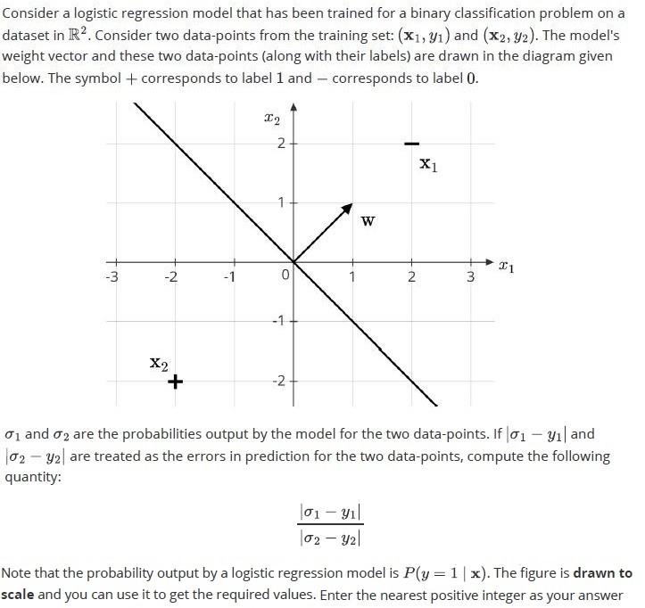
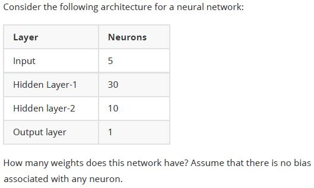
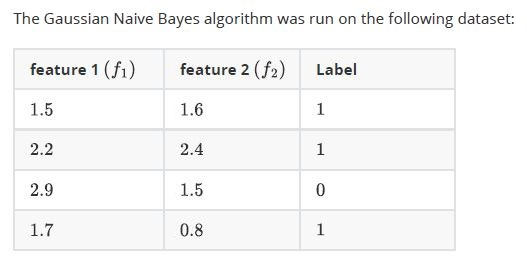
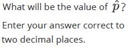
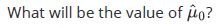
- 2.9
- 2.2
- (1.8,1.6)
- (2.9,1.5)
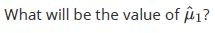
- 2.9
- 1.8
- (1.8,1.6)
- (2.9,1.5)
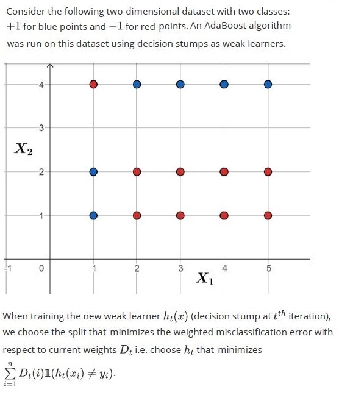
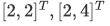
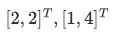
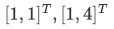
Answer key
- Q1 (MCQ, 5 marks): D
- Q2 (MCQ, 5 marks): C
- Q3 (MCQ, 5 marks): A
- Q4 (MCQ, 5 marks): C
- Q5 (MCQ, 5 marks): B
- Q6 (MCQ, 5 marks): B
- Q7 (MCQ, 5 marks): A
- Q8 (MCQ, 5 marks): C
- Q9 (MSQ, 5 marks): A, D
- Q10 (MSQ, 5 marks): A, B
- Q11 (MSQ, 5 marks): B, D
- Q12 (MSQ, 5 marks): A, B
- Q13 (MSQ, 3 marks): B, D
- Q14 (MSQ, 3 marks): A, C
- Q15 (SA, 5 marks): 2
- Q16 (SA, 5 marks): 2
- Q17 (SA, 5 marks): 1
- Q18 (SA, 5 marks): 460
- Q19 (SA, 1 marks): 0.74 to 0.76
- Q20 (MCQ, 2 marks): D
- Q21 (MCQ, 2 marks): C
- Q22 (SA, 3 marks): 0.2
- Q23 (MSQ, 3 marks): A, C, D
- Q24 (SA, 3 marks): 0.11 to 0.15
Concepts this paper tests
Auto-generated summary from the source site. Handy as a checklist; the lessons above explain each idea from scratch.
Here’s a structured summary of core topics, concepts, principles, and equations essential for the exam, followed by Mermaid knowledge graphs to visualize relationships.
Core Topics & Concepts
1. Kernel Methods & Feature Transformations
- Kernel Trick: Maps data to higher dimensions implicitly (e.g., polynomial kernels).
- Kernel Function: Example (Q2): Corresponding Feature Map (Q2):
2. Bayesian Estimation
Prior/Posterior Distributions:
- Prior: (e.g., Beta distribution for Bernoulli data).
- Posterior: .
- Bernoulli Likelihood: .
- Beta-Bernoulli Conjugacy: Posterior is Beta with updated parameters: , .
- Key Insight (Q3): If posterior mode > prior mode, likely more successes (e.g., 5 successes in 6 trials).
3. Regularization (LASSO, Ridge)
LASSO (L1 Regularization): .
- Sparsity: Higher → more weights set to 0 (Q4).
Ridge (L2 Regularization): .
- Smooths weights but doesn’t enforce sparsity.
4. Decision Trees & Information Gain
- Information Gain (IG): , where is entropy.
- Entropy: .
- Key Insight (Q5): If , children’s entropy = parent’s entropy. If one child’s entropy = parent’s entropy, the other must also equal it (symmetry).
5. Perceptron & Linear Separability
- Perceptron Update Rule: if misclassified.
- Convergence: Converges only if data is linearly separable (Q6). If not separable, weights oscillate indefinitely.
- Weight Update Analysis (Q11): Given and , solve for and such that: .
6. Support Vector Machines (SVM)
Hard-Margin SVM
- Primal Problem: s.t. .
- Dual Problem: s.t. , .
Key Insights:
- Optimal (Q8).
- Support vectors have (Q9).
- If , point is correctly classified with margin > 1 (Q14).
Soft-Margin SVM
- Primal with Slack: s.t. , .
- Dual: s.t. , .
KKT Conditions:
- If , point is correctly classified or (Q14).
7. Linear Regression & Loss Functions
- Squared Loss: .
Impact of Features/Regularization (Q10):
- More features (): Can reduce training loss (but risk overfitting).
- More data (): May not reduce training loss (focuses on generalization).
- Regularization (L1/L2): Increases training loss (penalizes complexity).
- Learning rate: Smaller rates may refine convergence but don’t directly reduce loss.
8. Loss Function Properties (Q12)
| Loss Function | Formula | Convex? | Key Properties |
|---|---|---|---|
| Hinge Loss | Yes | Used in SVM; linear for misclassified pts. | |
| Logistic Loss | Yes | Smooth; used in logistic regression. | |
| Squared Loss | Yes | Sensitive to outliers. | |
| 0-1 Loss | No | Non-convex; used for error rate. |
Key Comparisons (Q12):
- For : Logistic loss > Hinge loss (hinge = 0).
- Squared loss grows quadratically for large .
9. Training vs. Validation Curves (Q13)
- Training Loss: Decreases monotonically with training (optimization).
- Validation Loss: Decreases initially, then may increase (overfitting).
Identification:
- Curve 1 (lower, decreasing): Training.
- Curve 2 (higher, U-shaped): Validation.
10. PCA (Principal Component Analysis)
Steps:
- Center data: .
- Compute covariance matrix .
- Eigenvalue decomposition: .
- Project onto top- eigenvectors (principal components).
- Variance Explained (Q16): . . Given and top-3 variance = 88.88%: . Solve for .
11. K-Means Clustering
Algorithm:
- Initialize centroids .
- Assign points to nearest centroid (Euclidean distance).
- Recompute centroids as mean of assigned points.
- Repeat until convergence.
- Key Insight (Q17): Final centroids may coincide with initial centroids if points are symmetrically distributed.
12. Logistic Regression
- Sigmoid Function: .
- Prediction Error (Q18): : Absolute difference between predicted probability and true label.
- Geometric Interpretation: Points farther from the decision boundary have closer to 0 or 1.
13. Neural Networks
- Weight Calculation (Q19): For a fully connected network with layers , total weights: . Example: : .
14. Gaussian Naive Bayes
Assumptions:
- Features are conditionally independent given the class.
- Likelihood is Gaussian: .
Parameters (Q20–Q22):
- : Prior probability of class 1.
- : Mean of features for class .
- : Sample mean of class 1 features.
15. AdaBoost
- Weighted Misclassification Error (Q23–Q25): .
- Weight Update: , where .
- Key Insight: Misclassified points get higher weights in next iteration.
16. Ensemble Methods (Bagging, Random Forest)
Bagging (Q15):
- Trains multiple models on bootstrapped samples.
- Reduces variance (helps if base estimators are high-variance/low-bias).
- If estimators are identical, bagging offers no benefit.
Random Forest:
- Extends bagging by random feature subsets.
- Parallelizable (independent trees).